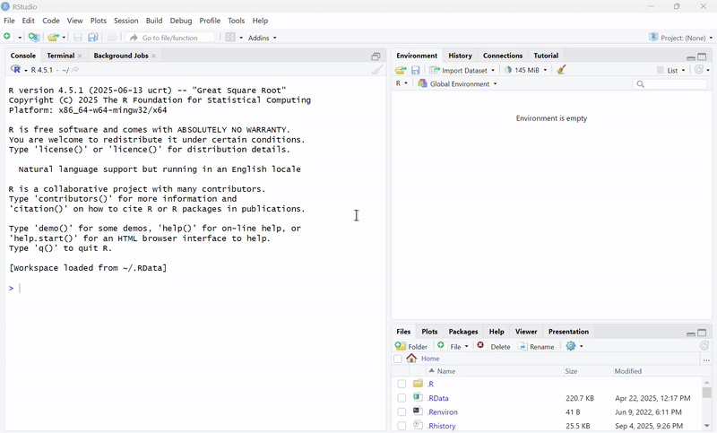
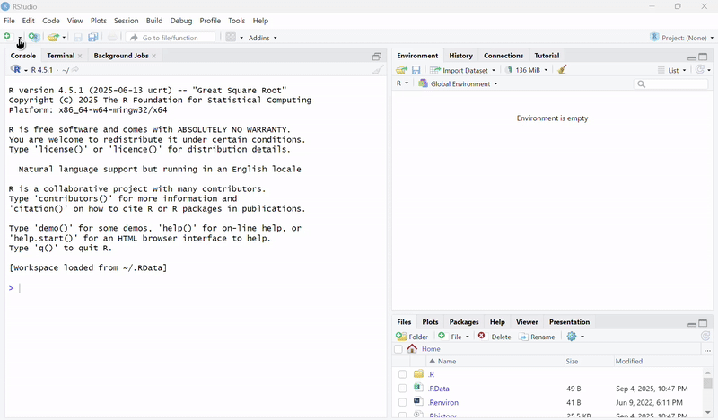
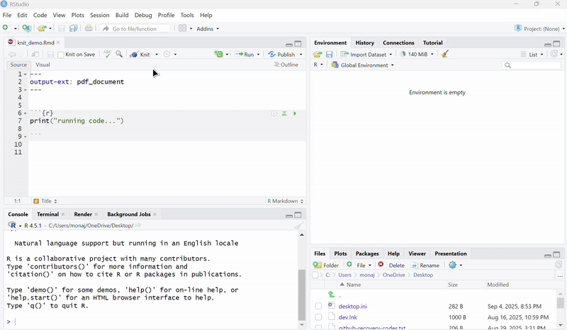

We will by trying Slido for attendance.
Scan the code and create a profile.
If you don’t create a profile, I won’t know you were here.
There’s a Q&A function. We could try that and see if it works.
420m
…/420m/labs/lab1Project > New Project > Existing Directorylab1 folder Create an empty RMarkdown file

# This is a heading. Notice the "#"
## This is a sub-heading. Notice the "##"
Markdown is a markup language that makes formatting text easier.
It allows you to write normal text alongside code.Markdown is a markup language that makes formatting text easier.
It allows you to write normal text alongside code.
Use “run” button or the keyboard shortcut Ctr + Enter or Command + Enter
This is how you create a vector. You use the notation c()
To choose a specific element of a vector, you can use []
Adding a single number to a vector
2, 3, 4
Adding a vector to a vector
2, 4, 6
Get into groups of 3-4
a with the numbers 18, 32, 11, and 25, in that ordera. Then divide by 7. Then subtract 2. Assign this to vector b. Make sure to add parentheses everytime you do an operationb and print itWhat did you get? (make sure you created a profile)
# Create vector a with the numbers 18, 32, 11, and 25, in that order
a <- c(18,32,11,25)
# Add 3 to all of vector `a`. Then divide by 7. Then subtract 2. Assign this to vector `b`. Make sure to add parentheses everytime you do an operation
b <- ((a + 3) / 7) - 2
# Sum up the numbers in vector b and print it
print(sum(b))c(). Remember that letters are strings. Assign this vector to the variable word1[:], remove the letter that is in b’s position. Assign that to the variable word2word2, assign that to word3What did you get?
# Create a vector out of the letters of the word RANDOM using `c()`. Remember that letters are strings. Assign this vector to the variable word1
word1 <- c("R", "A", "N", "D", "O", "M")
# Using `[:]`, remove the letter that is in `b`'s position. Assign that to the variable `word2`
word2 <- word1[1:5]
# Insert the letter "G" to the end of the `word2`, assign that to `word3`
word3 <- c(word2, "G")ca and the sum of vector b to the end of vector a. Assign this to dc from vector d. Make this vector e. Print ee represents the position of a letter in word3. This position is called the index. A new word is formed when you reorder the letters based on the order specified in e. Print out the new word. Challenge mode: decipher the word in one line of code using []What is the final answer?
# Create `a` vector with numbers 14, 31, 9, 19, 81, 3 and name that `c`
c <- c(14, 31, 9, 19, 81, 3)
# Insert the sum of vector `a` and the sum of vector `b` to the end of vector `a`. Assign this to `d`
d <- c(a,sum(a),sum(b))
# Subtract vector `c` from vector `d`. Make this vector `e`. Print `e`
e <- d - c
print(e)
# Each number in vector e represents the position of a letter in `word3`. This position is called the index. A new word is formed when you reorder the letters based on the order specified in `e`. Print out the new word. Challenge mode: decipher the word in one line of code using []
print(word3[e])Install packages in the console with install.packages("package_name")
We will install the package “tidyverse”, which is used for data analysis. Go ahead and enter install.packages("tidyverse") in the console.
Download the data file from canvas called 2020heights.csv and put it into this folder
After you knit your Rmakdown file, upload it to canvas. You are done! 
Remember you can now find all lab materials on this site: https://monaxue.github.io/420m/
```